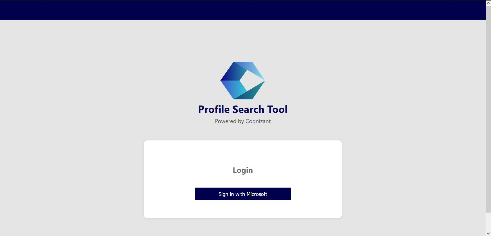
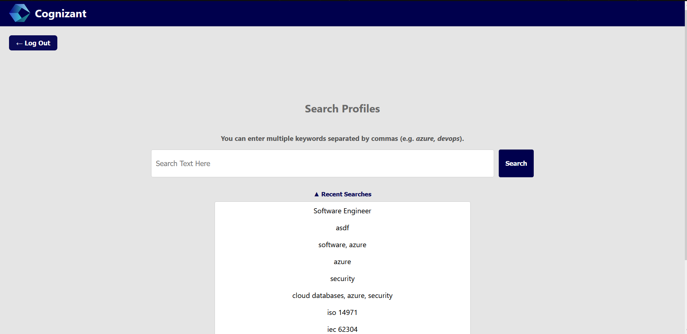
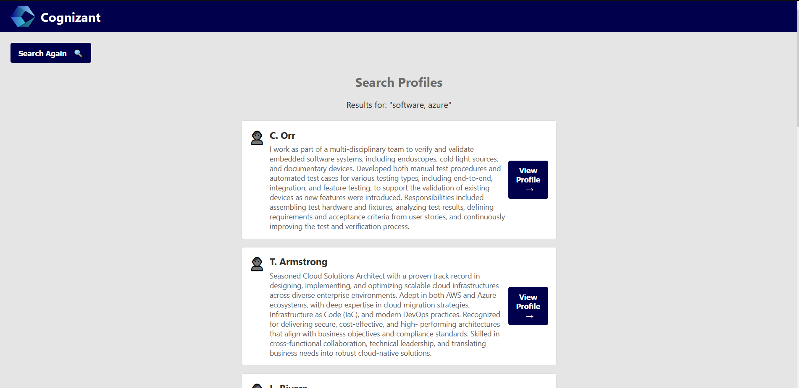
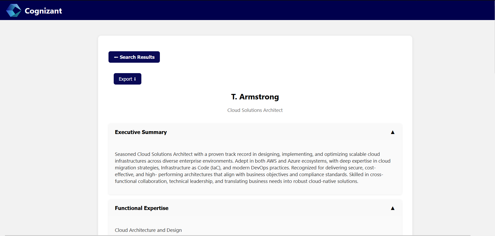

Final Implementation
Our final implementation brings together all aspects of our design into a cohesive and interactive web application. Below are screenshots highlighting key components of our deployed system:
During the spring semester, our team shifted focus entirely to implementation. We built and deployed a full-stack web application using Azure resources such as App Services, Blob Storage, Azure SQL Database, and Logic Apps. Our backend is powered by a Spring Boot API, and we automated the profile import process end-to-end using Power Automate and an Azure Function App that detects new profiles and invokes the API.
We implemented robust integration and unit tests to ensure system reliability, particularly for the profile parsing, database storage, and search logic. Our testing workflows helped us catch edge cases early and improve the system’s resilience before deployment.
The client was extremely pleased with the final product. They appreciated the streamlined search experience, the ease of exporting profiles, and the ability to fully automate profile ingestion from SharePoint. They expressed strong interest in adopting this tool internally, and we are confident that it is likely to be implemented within their consultant management processes.
🔐 Login Page
The login screen uses Microsoft authentication to verify users before accessing the application. This ensures that only authorized Cognizant employees can view or manage consultant profiles.
🔎 Profile Search
Once authenticated, users are taken to the search screen. Here, Team Leads can enter keywords (e.g., "azure", "devops") to filter relevant profiles. Recent searches are also displayed to improve usability and context during staffing sessions.
📋 Search Results
Search results are displayed in card format, showing consultant names, a brief summary, and a “View Profile” button. This layout allows quick comparison of candidate expertise to make informed staffing decisions.
👤 Full Profile View
When a profile is selected, users can view all available sections (e.g., Executive Summary, Functional Expertise). Content is grouped into collapsible sections to reduce visual clutter and improve readability. There’s also an Export button to generate a PDF version of the profile for sharing or documentation.